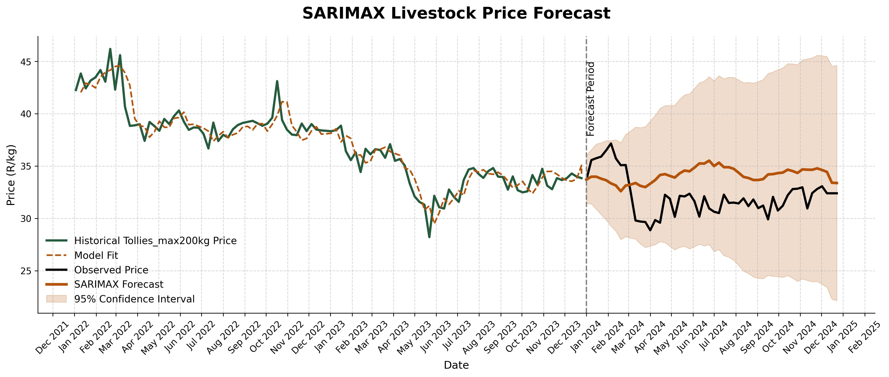

Forecasting livestock prices for financial planning and optimisation.
A Python application that predicts future livestock prices based on
historic livestock prices, agroclimatic patterns like rainfall, temprature etc.
and economic indicators.
Livestock price forecasting relies on analysing historical sales
data, feed costs, seasonal cycles, and supply metrics to predict
future market trends. Producers and analysts leverage traditional
statistical models and AI-driven systems to navigate price fluctuations
caused by supply shortages or shifts in regional demand.
Key Forecasting Models
Advanced AI models like machine learning and neural networks analyse
non-linear relationships—such as animal breed, weight, seasonality,
and local market sentiment—to generate highly accurate, per-head or
per-pound predictions. Traditional statistical time-series models
(AR & ARIMA) analyse past price series and seasonal components
(e.g., price shifts around religious holidays or seasonal herd turnoff
periods) to project future prices.
Factors Driving Price Volatility
The number of animals (herd supply) moving through auctions or feedlots
directly dictates short-term price pressure. The input costs such as price
of grain, forage, and other inputs heavily influences breakeven points and
future livestock placement rates. Unpredictable factors like regional drought,
flooding, or livestock disease outbreaks significantly disrupt supply and cause
volatile price swings.
The Problem
The fluctuating livestock prices poses a significant challenge to farmers by creating
financial uncertainty and limiting their ability to identify optimal buying and selling
opportunities. As a result, farm profitability and production planning are adversely affected.
The Solution
This project analyses various data patterns used to predict livestock prices using time series
modelling in Python, using those forecast prices to see what the financial implications
can be in mitigating pricing strategies for financial instruments.
Workflow
Data extraction from various sources → Data preparation → Data pattern analysis → Building model
data → Model training → Model Checks → Price forecasting → Planning mitigating strategies for
favourable and unfavourable prices.
Data
Insight into the Modelling Process (more technical)
Developing a time series forecasting model for cattle prices involved an extensive data preparation and modelling process.
Various potential exogenous factors, including weather conditions and vegetation indices, were investigated to identify
relationships with cattle price movements and determine the most informative lagged variables. Selecting appropriate lag
structures was an important step in capturing delayed effects that environmental and market factors may have on livestock
prices.
Considerable attention was also given to preparing and refining the datasets to ensure they were suitable for modelling.
This included handling missing observations caused by events such as disease outbreaks and periods when auction facilities
were closed over holiday periods, particularly around New Year. These data processing steps were essential to create a
consistent time series dataset and improve the reliability of the forecasting models.
Current Forecasts
Livestock category: Cattle - Tollies_max200kg

Future Improvements
Expanding project to cover other types of livestock prices for a broad farming livestock price planning